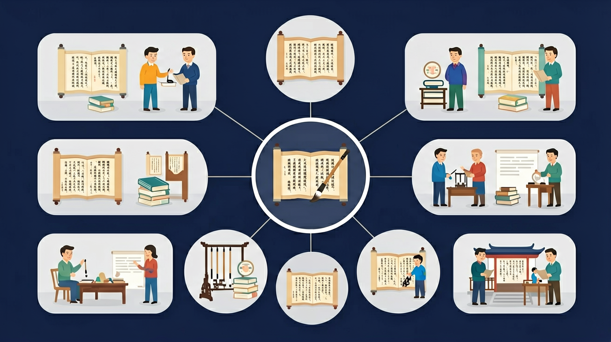

🌍 And（已知）：我们已经认识了很多汉字
⚡ But（问题）：但如何把想法和故事清晰地写出来？
💡 Therefore（新知）：因此我们学习写作，通过结构和表达技巧让文章更生动有力
让文字有魔法 · 写出会说话的句子！

回忆：今天学了哪些关键词和规则？试着说出来。
用自己的话解释今天学的核心概念，不看书能说清楚吗？
用今天的知识解决一个实际问题，或写一个新例子。
把今天的知识与已有知识联系起来：有什么共同点？有什么区别？能不能自己创造一道新题？
先独立作答，再点选项查看对错与错因。
下列哪句使用了拟人手法？
"时间像小马车"这个句子好在哪里？
改写"风吹过树林"用拟人手法，正确的是：
把"星星眨眼睛"补充完整：夜空中的星星像____
答案：调皮的孩子眨着眼睛
需保持拟人手法的一致性
"小河欢快地奔跑"这句话把____当做人来写
答案：小河
拟人对象是小河
关于修辞手法哪个说法正确？
收集广告语、儿歌中的修辞例句
❓ 为什么老师说我的比喻句像没煮熟的饺子？
❓ 排比句是不是句子越长越好？
❓ 写作文时怎么把'小鸟叫'说得更高级？
学完这一课，这些问题你都能自信地回答。
🎯 能判断比喻句是否贴切（本体喻体相似性）
🎯 能分析排比句的节奏感（3-4个短句为佳）
🎯 能运用拟声词+拟人手法升级简单描述
像拆乐高一样分解修辞部件：比喻=本体+喻体+相似点
修辞是语言的调味料，让平淡变美味
对比直白句与修辞句，像比较白开水vs果汁
在广告牌/动画片台词里发现修辞
把课文里的排比结构用到日记中
✅ 需有本体喻体（如：她像妈妈≠比喻）
💡 混淆比较句与比喻
✅ 每个短句应有独立画面（如：春雷/春雨/春风）
💡 过度追求形式整齐
口诀：比喻要像双胞胎，排比三连不拖沓，拟人让物会说话
类比：修辞就像手机滤镜，普通照片秒变大片
And：学生已经知道‘像’字可以用来比较
But：但不知道如何用比喻让句子更生动
Therefore：本模块教你用比喻写出漂亮句子
比喻就是把A事物比作B事物，让句子更形象。比如‘她的眼睛像黑葡萄’，把眼睛比作葡萄，突出又大又圆的特点。注意要有相似点，不能乱比，比如不能说‘书包像火箭’，除非书包真的会飞！
🌍 吃早餐时可以说‘蛋黄像小太阳’，操场跑步时可以说‘同学们像小马驹’。试试看，你还能发现哪些比喻？
哪个是正确比喻？
And：学生知道动物植物不会说话
But：但作文里经常把东西写得很死板
Therefore：本模块教你把事物‘变活’
拟人就是给非人类的东西加上人的动作或感情。比如‘风儿唱着歌跑过田野’，风本来不会唱歌，这样说就特别生动。注意要符合事物特点，不能说‘桌子哭着跑走了’，除非在童话里！昨天三（2）班小红写‘小雨滴在跳芭蕾’，老师给她画了五颗星。
🌍 观察下雨时，可以说‘雨点在玻璃窗上跳舞’；看到向日葵，可以说‘它们仰着脸追太阳’。你还能让什么‘活’起来？
哪个是拟人句？
And：学生知道说话要真实
But：但作文不会用夸张吸引读者
Therefore：本模块教你合理‘吹牛’
夸张就是故意把事物说得特别大或特别小，但不是撒谎。比如‘我饿得能吃下一头牛’，其实吃不下，但说明真的很饿。四（1）班小明写‘作业堆得比山高’，老师夸他写得有趣。注意要让人一看就知道是夸张，不能说‘我身高1厘米’，那成说谎啦！
🌍 说天气热可以讲‘柏油路热得能煎鸡蛋’，说跑步快可以说‘脚底像装了火箭’。试试把你的感受‘放大’说说看？
哪个是合理夸张？